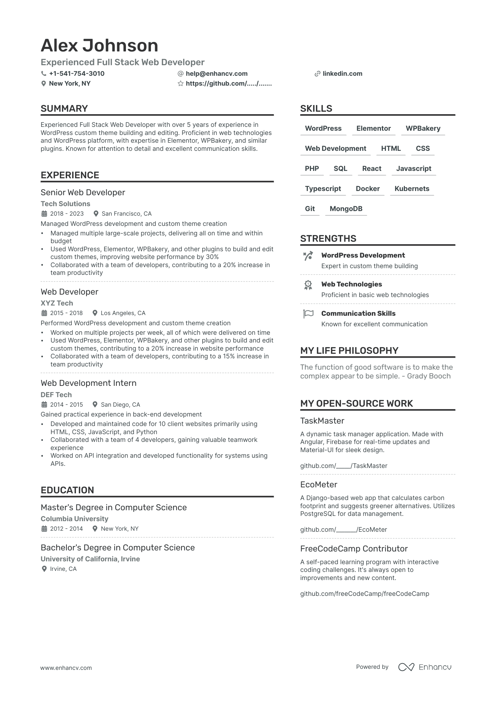

Web Developer
Your web developer resume must highlight your technical skill set. Include proficiency in languages such as HTML, CSS, JavaScript, and frameworks like Angular or React. Showcase your experience with responsive design and cross-platform compatibility. Also, emphasize your ability to work with version control systems like Git.